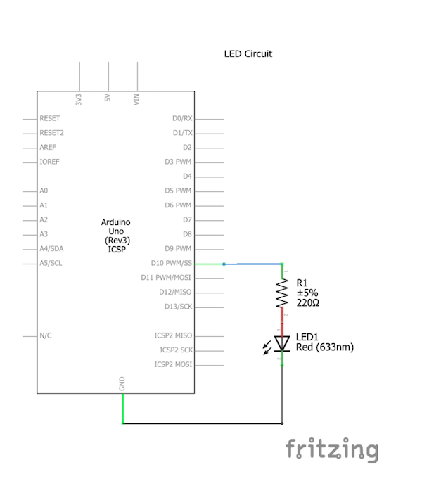
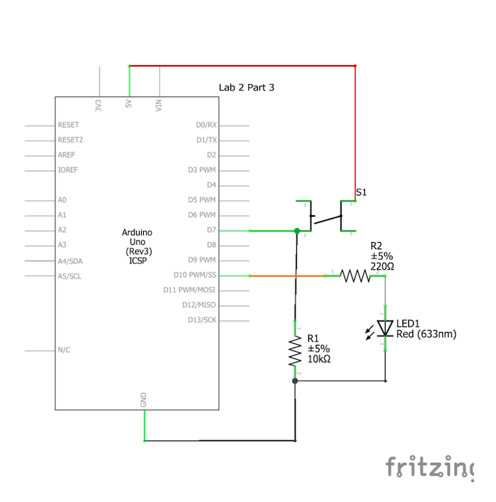
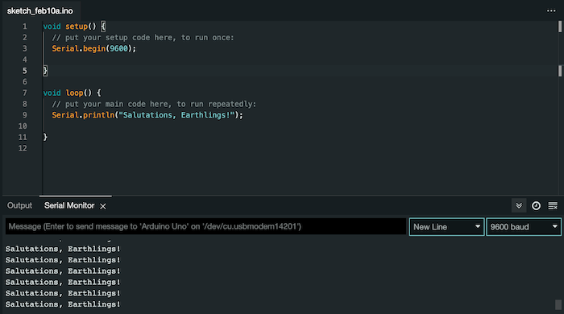
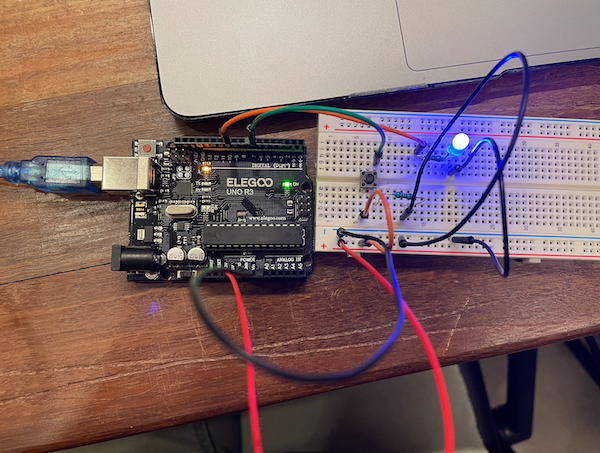

Overview
In this four part lab, I created circuits using an LED, resistors, and a button to demonstrate comprehension of how to use arduino uno and arduino IDE.
The example arduino code that I used for this part can be viewed here.
Materials
The materials that I used for this lab are an arduino (elegoo) uno R3 controller board, usb cable, usb adapter, button, 830 tie-points breadboard, breadboard jumper wires, resistors, LEDs, and a multimeter.
Part 1
The first step of the lab was to install the Aduino IDE to my computer. After this was accomplished, the goal was to connect the Arduino Uno board to my computer after grounding myself. I connected the board using a USB cable and USBC converter, and the green power light on the board turned on. This means that power from my computer was being supplied to the board. Next, I selected the Aduino Uno option in the board selection menu in the toolbar of the IDE. To test my Arduino Uno, I used the basic built-in example from the IDE by navigating File> Examples > 01. Basics > Blink. This code makes an orange LED on the board blink every second.
A video of this is here.
Part 2
In this second part of the lab, I needed to expand the circuit to blink an external LED using digital output. I created a basic circuit using two jumper wires, a 220 ohm resistor, and a LED (the circuit schematic can be found below). Then, in my code, I first set the LED_PIN to 10 (this is the digital output on the arduino board that I used). Then, within the setup function, I set the pinmode to be the LED_PIN as an OUTPUT (). This function is needed because we are outputting voltage from the Arduino to the LED. In the loop function, I made the LED turn on using the digitalWrite function and setting the output to HIGH (5V). Then, I created a delay of 1 second using the delay function. Next, still using digitalWrite I set the LED_PIN to low (0V) and then create another 1 second delay. When running, this code programs the arduino board to blink the LED at 1 second intervals.
My code for this part can be viewed here.
A video of the external LED blinking every second is here.
Next, I switched the delay time between each blink to be faster (every half second).
My code for this part can be viewed here.
A video of updated delay time is here.
Part 3
After blinking the external LED, I added a digital input button to my circuit. I added a pull-down 10k ohm resistor in order to avoid floating my circuit. When the button is pressed, the circuit is closed and pulled up to 5V, otherwise has a 0V. Arduino is able to detect this button press due to the Serial Monitor. I programmed the arduino to send a message to the serial monitor everytime the button was pressed, which is shown below.
 My code for this part can be viewed here.
Next, I built on this code in order to test the status of the button. I created code to display "waiting..." when the button is not pressed, and a message saying "success" when the button is pressed.
My code for this part can be viewed here.
A video of this is here.
Sometimes there is a button state that oscillates, even when I press the button once. The button is oscillating because of the manual aspect of the button can bounce up and down (bouncing), causing oscillation when unintended. A technique I could use to fix this would be debouncing.
Part 4
In the last part of this lab, I created an LED reaction game. The LED in the arduino turns on after a random interval, and the player pressed the button as soon as they see the LED light up. The output of the game is the time that the player took to press the button, which is their score. The game starts with a greeting, asks the player if they are ready, the LED turns on after a random interval between half a second to five seconds, and then once the button is pressed the LED turns off.
The functions I used for my code include the random function to create a random interval, millis function in order to measure the reaction time and time since LED turned on, etc.
My code for this part can be viewed here.
A video of this is here.